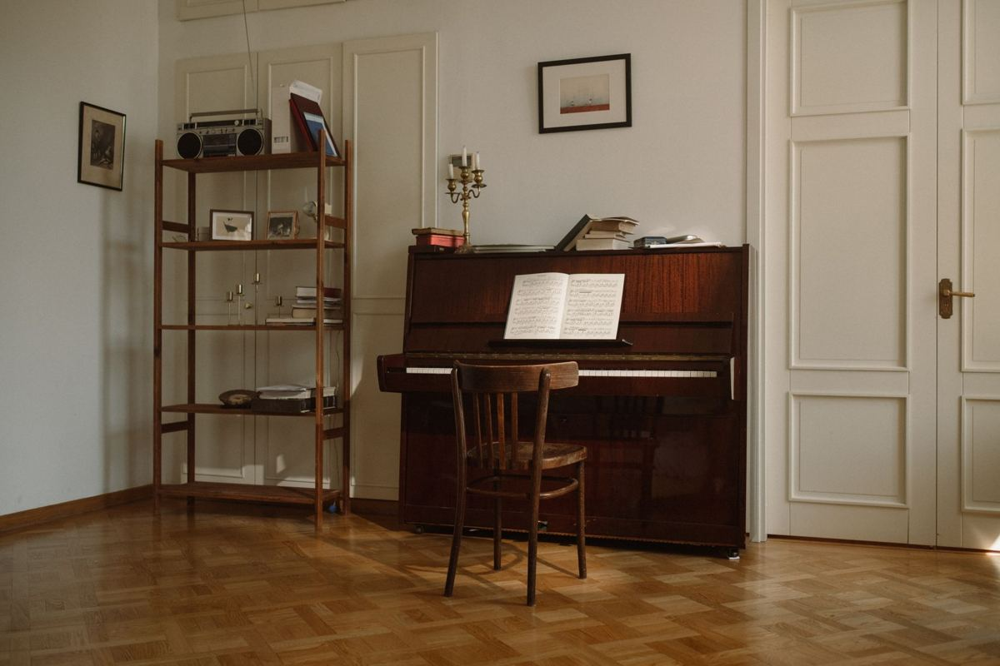

A piano, a pool table and a safe are not heavy furniture. They are three separate problems: a piano carries its weight in one unbalanced corner, a pool table comes apart into slate slabs that each need two people, and a safe is usually bolted through the slab. Send a photo and the doorway measurement before booking any of them, because the answer changes with the path out.
Sometimes the honest answer is that you need a specialist instead of a hauler, and we will say so.
The piano
An upright looks like a dresser and behaves like nothing of the sort. The weight sits high and toward the back, so the moment it tips it goes hard, and the casters on the bottom are decorative on most of them. They roll across a room and fail on a threshold.
The path matters more than the room. A straight shot to a front door on one level is ordinary work. A turn at the bottom of a staircase, a step down into a sunken living room, or a narrow hallway with a return is where a piano job becomes a piano job.
Grands are different again, and they are the honest limit. A grand comes apart: legs off, lyre off, lid off, the body onto a piano board on its side. That is a trade, and the people who do it own the board and the straps and have done it a hundred times. If you have a grand, tell us on the phone and we will tell you plainly whether this is our job or a piano mover's.
One thing worth saying, because people ask. An old upright with a cracked soundboard is rarely worth restoring and almost never sells, and that is not us judging your piano. It means that if a school, church, or teacher has already passed on it, disposal is a reasonable outcome rather than a failure.
The pool table
A slate table never leaves in one piece, and anyone who tells you otherwise is going to damage a door frame.
The sequence is the same everywhere. Pockets and rails come off, the felt comes off the slate, and the slate lifts out in sections that are each a two-person carry. Under that is a wood frame and legs that unbolt. Done properly that is a couple of hours of real work before anything reaches the truck.
The frequent surprise is the game room upstairs. A table that went up before the stair rail was finished has to come down as separate slabs, and the slabs are the part that will not forgive a slip on a carpeted stair. Tell us the floor it is on when you call.
If the table is still in good condition and you want it to go somewhere useful rather than to disposal, say so early. Habitat for Humanity's ReStore network takes furniture and building material and their locations vary in what they can accept, so a call before the removal date is worth making.
Measure the narrowest point on the way out, not the item. Doorway width, the turn at the bottom of the stairs, and the gate to the back yard. Almost every heavy-item job that goes sideways goes sideways at a point somebody never measured.
The safe
Safes are the item where the honest answer is most often a qualified maybe.
A small gun safe or a home document safe that is not anchored is straightforward. An anchored safe is bolted through the slab or lagged into studs, and those bolts have to come out before anything moves. A large residential safe in a closet with a single door and a turn can exceed what any crew should be carrying on stairs, and the ones built into a wall are a demolition job rather than a removal.
Two rules before anybody touches it. Open it and empty it, and if the combination is lost, that is a locksmith's call rather than ours, because we will not drill or breach a safe. And if the safe is going for disposal rather than reuse, know that it will go to metal recycling, which is where most of its weight belongs.
Tell us the make, the approximate size, the floor it sits on, and whether it is anchored. Those four facts decide the whole job.
What we take, and what we say no to
Ordinary single heavy items are routine work: upright pianos with a workable path, slate pool tables, unanchored and anchored safes within reason, gun cabinets, arcade cabinets, jukeboxes, entertainment centers built in place, sleeper sofas, and the exercise equipment covered in treadmills, home gyms and the upstairs bonus room. The general principles for getting a large piece through a house are in old furniture removal and getting it out.
We say no when saying yes would be a bad idea, and we would rather do that on the phone than in your hallway. A grand piano. A safe that needs rigging equipment. Anything where the only path involves a window or removing a door frame we are not qualified to reinstall. Sending the wrong crew at a job like that is how floors and people get hurt.
Our own crews do this work, not gig labor hired off an app that morning. On a one-item job that is the entire difference, because the whole job is judgment and technique rather than volume. What we will and will not load generally is in what junk removal will and will not take.
The free route, and where it runs out
If you have already broken the item down yourself, city bulky collection may take part of it. Plano publishes its rules under bulky waste collection and McKinney under residential trash services, and a disassembled pool table frame is closer to ordinary bulky waste than most people assume.
The slate is where that ends. Stone is dense and most bulky programs exclude it, the same way they exclude concrete and brick. Pianos are usually over the size limit outright, and a safe is not going to the curb under any program. The city route works after the hard part is already done, which is the part people are calling about.
How the job runs
Send a photo of the item, a photo of the doorway or stairs it has to pass, and the floor it is on. For a safe, add the make and whether it is bolted down. That is enough for us to tell you honestly whether we are the right call.
A crew comes out, looks at the piece and the path, and gives you a firm number before anything moves, disposal included. The quote is the bill. They pad the frames and rails, they take apart what has to come apart, and they carry it out the way they planned rather than the way that looked shorter.
We run seven days a week across the northern suburbs, including McKinney, Allen, Plano, Frisco, Richardson, Little Elm, Prosper, The Colony, Wylie and Fairview. Call before noon and the same afternoon is typical, though typical is the honest word rather than a promise. The service page for this work is furniture removal, and you can send us the photos whenever you are ready.
Frequently asked questions
Can you take an upright piano down a flight of stairs?
Often, and it depends on the stairs rather than the piano. Send a photo of the staircase and the turn at the bottom, and we will give you a straight answer rather than finding out on the day.
Do you move pianos and pool tables to a new house?
No. We are haulers, not movers. If the item is going somewhere else rather than to disposal or donation, you want a specialty mover for that trip.
My safe is bolted to the slab. Is that a problem?
Usually not. Tell us when you call so the crew brings the right tools, and understand the anchor bolts leave holes in the slab once they come out.
The safe is locked and I do not have the combination.
Call a locksmith first. We will not drill or breach a safe, and we will not haul one we cannot confirm is empty.
Can the pool table be donated instead of disposed of?
Sometimes, if it is in good condition and a partner can take it. Say so when you book, because that has to be arranged before removal day rather than after the slate is already on the trailer.
Most of these calls are one object and one question: can it get out of here without wrecking anything. Send the photo and the measurement and we will tell you. The rest of what we haul is on the services page.